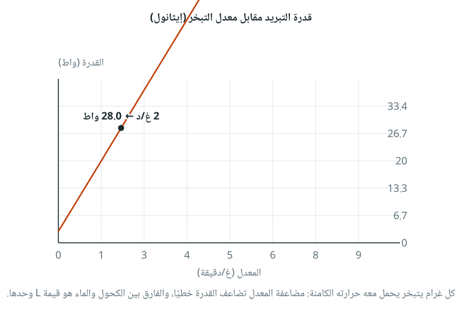

كيف يحوّل التبخر انتقال الكتلة إلى تبريد؟
حرّك معدل التبخر واختر السائل. محاكاة تعليمية لا قياس فيزيائي حقيقي.
محاكاة تعليمية لا قياس فيزيائي حقيقي: الأرقام تُحسب من النموذج لحظيًا، ولا تُقاس بأدوات منزلية.
افتراضات النموذج والمصدر
Q = ṁ · L_v
كل الكتلة المتبخرة تسحب حرارتها من الجسم
الحرارة الكامنة ثابتة عند الضغط الجوي
قيم حرارة كامنة مرجعية ثابتة قرب الغليان؛ المقارنة تعليمية وليست توقعًا لتبخر عند حرارة الجلد.
Latent heat of vaporization of common fluids — The Engineering ToolBox
عندما تغادر جزيئات السائل سطحه كبخار، تحتاج إلى طاقة لتغيير الطور. قد تأتي هذه الطاقة من السائل أو السطح الملامس أو الهواء، فيبرد الجزء الذي يفقدها. تزيل حركة الهواء بخار السطح وقد تزيد معدل التبخر، لكن هذا المعدل ليس محسوبًا هنا.
تحدد أنت معدل الكتلة المغادرة، ثم يحسب النموذج قدرة انتقال الحرارة من حاصل ضربه في الحرارة الكامنة المرجعية. عند مقارنة سائلين بالمعدل نفسه، يكون الفرق الحسابي ناتجًا من الحرارة الكامنة؛ أما مقارنة التبريد الفعلي فتتطلب أيضًا حساب معدل التبخر والخواص ودرجة الحرارة.
هذه مقارنة افتراضية بالمتصفح. قيم الحرارة الكامنة ثابتة مرجعية عند ظروف مختلفة قرب الغليان، وليست نموذجًا دقيقًا لتبخر سوائل من الجلد عند حرارة الغرفة.
كيف تعمل الظاهرة؟
جزيئات السائل الأعلى طاقة هي التي تفلت أولًا، فتقلّ متوسط طاقة الباقي فيبرد السائل والجسم الملامس. التهوية تزيل البخار المشبع فوق السطح فتسرّع الفرار.
العلاقة بالأرقام
المعادلة: Q = ṁ · L_v. عند معدل التبخر 2.00 غ/دقيقة، السائل إيثانول ، يعطي الحساب: قدرة التبريد = 28.0 واط؛ الحرارة الكامنة = 841 kJ/kg؛ الكتلة في الساعة = 120 غ/س. حالة «إيثانول بنفس المعدل» (معدل التبخر 2.00 غ/دقيقة، السائل إيثانول ): قدرة التبريد = 28.0 واط؛ الحرارة الكامنة = 841 kJ/kg؛ الكتلة في الساعة = 120 غ/س. حالة «ماء بنفس المعدل» (معدل التبخر 2.00 غ/دقيقة، السائل ماء ): قدرة التبريد = 75.3 واط؛ الحرارة الكامنة = 2,260 kJ/kg؛ الكتلة في الساعة = 120 غ/س. هذه أمثلة مولدة من دالة الحساب نفسها؛ وليست قياسات فعلية أو مواصفات لجهاز تجاري.
مفاهيم متقاربة
يُخلط بين «حرارة التبخر» و«حرارة التكاثف»: هما المقدار نفسه بإشارتين متعاكستين — ما يسحبه التبخر من الجلد هو ما يطلقه التكاثف على سطح بارد. عملية واحدة باتجاهين، والفرق في الاتجاه لا في المقدار.
حدود التطبيق
القدرة المحسوبة تفترض أن كل الكتلة المتبخرة تسحب حرارتها من الجلد؛ في الواقع جزء يأتي من الهواء، وجزء يبرد السائل نفسه قبل أن يلامس الجلد. لذلك تُقرأ القدرة كسقف أعلى للتبريد المتاح، لا كقيمة مقيسة.

| الكمية | القيمة | المصدر |
|---|---|---|
| قدرة التبريد — الحالة الافتراضية | 28.0 واط | [1] |
| الحرارة الكامنة — الحالة الافتراضية | 841 kJ/kg | [1] |
| الكتلة في الساعة — الحالة الافتراضية | 120 غ/س | [1] |
المصادر
- 1 Latent heat of vaporization of common fluids — The Engineering ToolBox. www.engineeringtoolbox.com/fluids-evaporation-latent-heat-d_147.html · اطُّلع عليه 2026-11-19
- 2 Evaporative cooler — physics — Wikipedia. en.wikipedia.org/wiki/Evaporative_cooler · اطُّلع عليه 2026-11-19
راجعه: عبدالله الهويدي — مراجعة في تطبيق انفراد · 2026-11-19 · آخر تحديث 2026-11-20
رجوع إلى المعمل